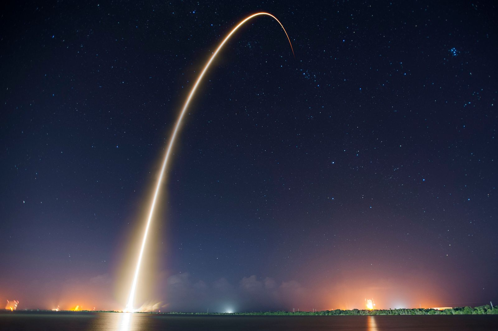

Laika: Yörüngeye Giden İlk Canlı ve Geri Dönmeyen Yolculuk
3 Kasım 1957. Sputnik 1’in fırlatılmasından henüz dört hafta olmamıştı ve Sovyetler Birliği dünyayı bir kez daha şaşırttı: yörüngeye bu sefer çok daha ağır bir uydu çıkmıştı ve içinde canlı bir yolcu vardı. Moskova sokaklarından toplanmış, yaklaşık altı kilo ağırlığında, üç yaşlarında bir melez dişi köpek. Adı Laika. Bu hikâye çoğumuzun bildiği bir “uzaya giden ilk köpek” cümlesinden çok daha dolambaçlı: mühendislik bir teslim tarihine yetişmeye çalışıyordu, bilim bir şey öğrenmek istiyordu, siyaset ise bir gösteri istiyordu. Kaynaklar aynı olaya baktığında üç ayrı hikâye anlatıyor. Bugün bu üçünü yan yana koymaya çalışacağım.

Bir sözün gölgesinde: “7 Kasım’a yetişsin”
Anlatılan hikâye şöyle: Sovyet lideri Nikita Kruşçev, Ekim Devrimi’nin 40. yıldönümü olan 7 Kasım 1957’ye bir uzay başarısı armağan etmek istedi. Sputnik 1’in 4 Ekim’de yörüngeye çıkmasının yarattığı etkiden memnundu ve bir yenisini istiyordu. Resmî karar 10 ya da 12 Ekim’de verildi, yani elde dört haftadan az bir süre vardı. Planlanan asıl bilimsel uydu olan “Obyekt D” ancak aralıkta hazır olabilirdi, bu yüzden çok daha basit, hızlı yapılabilir bir uydu devreye girdi.
Bu anlatının bir yan tarafı daha var ve ilginç. Bir uzay tarihi sitesi, “Kruşçev emretti, Korolev zor durumda kaldı” anlatısının bir mit olduğunu savunuyor. Ona göre Baş Tasarımcı Sergey Korolev, Kruşçev’in uzay coşkusunu kendi planlarını, insanlı uçuş dâhil, ilerletmek için kullandı. “Bir ayda sıfırdan tasarlandı” ifadesi de abartılı: köpek kabini gibi temel donanım zaten vardı, çünkü Sovyetler 1951’den beri toplam 12 köpeği balistik, yani yörüngeye ulaşmayan uçuşlarda göndermişti. Bir köpeği yörüngeye çıkarma planları da en az bir yıl öncesinden taslak hâlindeydi. Yani acelecilik gerçekti, ama sıfırdan başlama değil.
Mühendis Boris Çertok’un anlatımına göre uydu ön tasarım olmadan inşa edildi. Parçaların çoğu eskizlerden yapıldı ve yalnızca üç unsur için teknik çizim vardı. Aynı anda hem bir maket hem de uçuş modeli üretildi. Bu, bir mühendis için hem hayranlık hem de dehşet uyandıran bir tablo.
Laika kimdi?
Laika bir sokak köpeğiydi. Sovyet bilim insanları, Moskova sokaklarındaki köpeklerin soğuğa ve açlığa alışık olduğunu varsayıyor ve bu yüzden onları seçiyordu. Adı aslında bir cins türünü gösteriyor: “Laika”, Rus ve Sibirya av köpeklerinin genel adı ve havlamakla ilgili bir kökten geliyor. Bu bilgi benim arka plan bilgim. Eğitmenleri ona önce “Kudryavka”, yani “Küçük Kıvırcık” adını vermişti. Başka adları da vardı: “Zhuchka”, “Limonchik”. Dünya ona Laika dedi, ama Amerikan basını ona bir ara “Muttnik” adını taktı, bu da benim hatırladığım bir ayrıntı.
Seçimi yapan Vladimir Yazdovski’ydi. Laika’yı fırlatmadan on gün önce asıl uçuş köpeği olarak seçti. Yedeği Albina’ydı ama Albina yakın zamanda üç yavru doğurmuştu, bu yüzden Yazdovski onu ilk tercih yapmadı. Üçüncü bir köpek, Mushka ise yer kontrol köpeğiydi: araçları ve yaşam destek sistemini sınamak için kullanılıyordu.
Eğitim, bugün bakınca ürkütücü bir ayrıntı seviyesinde. Köpekler giderek küçülen kafeslerde 20 güne kadar bekletildi. Santrifüj denemeleri ve gürültü benzetimleri nabzı iki katına çıkardı ve kan basıncını yükseltti. Aktarıldığına göre müshiller işe yaramadı, uzun eğitim süreleri yaradı. Kabinde köpeğin yalnızca ayakta durabileceği, oturabileceği ya da yatabileceği bir alan vardı, dönmeye yer yoktu.
Kabinin içinde ne vardı?
Kabin alüminyumdu, yaklaşık 0,8 metre uzunluğunda ve 0,64 metre çapındaydı. Bilimsel roketlerde kullanılan, geri alınabilir bir kabinden uyarlanmıştı. İçinde bir oksijen üreteci, oksijen zehirlenmesini önleyen ve karbondioksiti emen sistemler ve 15 dereceyi aşınca devreye giren bir fan bulunuyordu. Yemek bir jeldi: yüzde 40 galeta unu, yüzde 40 et tozu ve yüzde 20 sığır yağı, agar ve suyla karıştırılmış. Yedi günlük bir uçuşa göre hesaplanmıştı. Bir elektrokardiyogram nabzı izliyordu, ayrıca solunum, en yüksek atardamar basıncı ve hareket sensörleri vardı.
Peki yeryüzüne dönüş mekanizması? Yoktu. Uydunun ısı kalkanı da, geri alma sistemi de yoktu. Bir kaynak buna “mühendislik tavizi” diyor, bir diğeri ise siyasetin güvenilir bir yaşam destek sistemi için zaman bırakmadığını söylüyor. Yani Laika’nın dönmeyeceği baştan biliniyordu.
3 Kasım: Fırlatış ve ilk saatler
Laika 31 Ekim’de, fırlatmadan üç gün önce kabine yerleştirildi. Fırlatma 3 Kasım 1957’de Baykonur’dan yapıldı. Saatine dair kaynaklar farklı: biri 05:30:42 Moskova saati, biri 07:22, başka bir kaynak ise 02:30:42 GMT diyor. Bu üçü aslında büyük olasılıkla aynı saatin farklı saat dilimlerinde yazımı ya da bir yazım karışıklığı, ben 02:30:42 GMT’yi (Moskova’da 05:30:42) esas alıyorum. Uydu 225 × 1.671 kilometrelik, 65,3 derece eğimli bir yörüngeye oturdu.
Nabız verileri hem etkileyici hem hüzünlü. Laika’nın fırlatmadan önceki nabzı dakikada 103’tü. Hızlanmanın ilk anlarında 240’a çıktı (bir kaynağa göre 260). Solunumu normalin üç dört katına ulaştı. Ağırlıksızlığın üçüncü saatinde nabzı 102’ye inmişti ama yer testlerine göre bunun oturması yaklaşık üç kat daha uzun sürdü. Telemetri onun huzursuz ama yemek yediğini gösteriyordu.
Sonra bir şey ters gitti. Aktarılana göre burun konisi ayrıldı ama roketin ana gövdesi uydudan ayrılmadı. Bu, ısı kontrolünü bozdu, yalıtım koptu ve kabin sıcaklığı 40 dereceye kadar çıktı. Bir kaynak, uydunun zaten roketin ikinci kademesine bağlı kalacak şekilde tasarlandığını, “ayrılamadı” iddiasının yanlış olduğunu söylüyor. Yani kaynaklar bu noktada birbiriyle çelişiyor. Bu yazıda bunu netleştirmeye çalışmıyorum, sadece ısı kontrolünün beklenen gibi çalışmadığını not ediyorum.
Neden köpek? Benim okumam
Bunu merak edebilirsin: Sovyetler neden bir maymun ya da fare değil de köpek seçti? Bu kısım kaynaklardan çok genel bilgimden ve bir yorumdan oluşuyor. Köpekler eğitilebilir, insanlara uyumlu ve fizyolojik verileri ölçülebilen hayvanlardı. Üstelik Sovyet programı onlarla yıllardır çalışıyordu, yani deneyim birikmişti. 1951’den beri 12 köpek balistik uçuşlara çıkmıştı. Bir de sokak köpeklerini kullanmanın pratik bir yanı vardı: soğuğa ve açlığa dayanıklı olduklarına inanılıyordu. Bu, bilimsel bir gerekçe olduğu kadar, bir insanî riski küçük göstermenin kolay yoluydu. Çünkü sokaktan alınmış bir köpeğin ölümünü toplum, laboratuvarda yetiştirilmiş bir hayvanın ölümünden daha az sorgulayacaktı. Bu son cümle bir yorumdur, kaynakta böyle geçmiyor.
Amerikalılar ise aynı yıllarda daha çok primatlara yöneldi. Bunu da ayrıca doğrulamadım ama genel bilgi olarak, ABD’nin sonraki yıllarda şempanzeleri insanlı uçuşlara hazırlık için kullandığı biliniyor. İki program arasındaki bu fark, iki ülkenin uzaya farklı yollardan yaklaştığını gösteren küçük bir işaret.
Gerçeği saklayan 45 yıl
Laika’nın ne zaman ve nasıl öldüğü, Sovyetler’in uzun süre farklı anlatılarla geçiştirdiği bir konu oldu. İlk dönemde pilinin bittiği ve boğulduğu ya da bir zehirli yemekle ötanazi yapıldığı söylendi. 1999’da Rus kaynakları köpeğin uçuşun dördüncü gününde kabinin aşırı ısınmasıyla öldüğünü yazdı. Asıl açıklama, Ekim 2002’de Houston’daki Dünya Uzay Kongresi’nde geldi: Dimitri Malashenkov, Laika’nın yörüngenin dördüncü turunda aşırı ısınmadan öldüğünü söyledi. Güvenilir bir sıcaklık kontrol sistemi kurmak, eldeki süre içinde pratikte imkânsızdı.
Ama bu konuda da kaynaklar tutarsız. Biyotelemetri 5-7 saat içinde kesildi. Eski bir tahmin onun dört güne kadar yaşadığını söylüyordu. Yeni çalışmalar ise ısı yorgunluğundan üçüncü ya da dördüncü turda öldüğünü ileri sürüyor. Bir kaynak telemetri zamanlayıcısının yanlış ayarlanmış olabileceğini de aktarıyor. “Ötanazi edildi” anlatısına gelince, bir uzay tarihi sitesi bu iddiayı doğru bulmuyor: ötanazi planı konuşulmuş olabilir ama uyduda bunu yapacak donanım yoktu. Kısacası ölümün saati ve biçimi hâlâ kesin değil.
Uydu ise çok daha uzun yaşadı. Sputnik 2, yaklaşık 2.570 tur attı ve 14 Nisan 1958’de, 162 gün sonra atmosfere girip parçalandı. Yani Laika’nın kabini uzun bir süre bir mezar gibi dönmeye devam etti, ama bu benim eklediğim bir benzetme.
Uydunun asıl işi: Bilim ne ölçtü?
Laika’nın hikâyesi uydunun diğer işlerini gölgede bıraktı. Oysa Sputnik 2 bir bilim aracıydı. Üzerinde Tral-D telemetri sistemi vardı ve her yörüngenin yaklaşık on beş dakikası boyunca veri iletiyordu. İki spektrofotometre taşıyordu: biri Güneş’ten gelen ultraviyole ve X ışınlarını, diğeri kozmik ışınları ölçmek için tasarlanmıştı. Bu ayrıntının önemi şurada: uydunun asıl hedefi hem biyolojik hem fiziksel bir veri toplamaktı ve ikisi aynı bütçeyle, aynı hızla yapılmıştı. Bir kaynak, bazı uçuş kontrol donanımının bilimsel yüke yer açmak için çıkarıldığını ve uçuş profilinin yakıtı daha verimli kullanacak şekilde değiştirildiğini aktarıyor. Yani mühendisler her gramı bilimsel yüke ayırmaya çalışmıştı.
Bir de kabinde küçük bir televizyon kamerası olduğu söyleniyor. Bir kaynak bunu kesin olarak yazıyor, diğeri “olası” diyor. Eğer varsa, Laika’nın görüntülerinin hiçbir zaman yayımlanmaması, hikâyenin saklanan taraflarından biri olurdu. Bunu açık bir soru olarak bırakıyorum.
Amerika’nın cevabı
Sovyetler’in iki ardışık başarısı, ABD’de ciddi bir panik yarattı. Bu kısım benim genel bilgim. Aralık 1957’de ABD’nin Vanguard roketinin fırlatma denemesi herkesin önünde patladı ve basın bunu bir yenilgi olarak yorumladı. İlk Amerikan uydusu Explorer 1 ise 31 Ocak 1958’de yörüngeye çıkabildi. Bunlar o dönemin atmosferini gösteriyor: Sputnik’ler yalnızca iki bilimsel başarı değil, bir güven krizi de doğurdu. Yukarıda anılan “füze açığı” tartışması bunun siyasi devamıydı. Bu yüzden Laika’nın hikâyesini yalnızca bir köpek hikâyesi olarak okumak eksik kalıyor: aynı sahne, bir ülkenin eğitim ve bilim politikasını yeniden yazmasına neden olan bir şoktu.
Dünyanın tepkisi: Hayranlık, öfke ve korku
Haberi duyan dünya birden fazla duyguyla bölündü. İngiltere’de Ulusal Köpek Savunma Birliği, Laika’nın uzayda kaldığı her gün için bir dakikalık saygı duruşu istedi. RSPCA’ya protesto mektupları yağdı. New York’ta Birleşmiş Milletler önünde gösteriler yapıldı. 1958’de bir Polonya dergisi, görevi “üzücü” buldu ve köpeğin dönememesini “bilim için büyük bir kayıp” olarak niteledi.
Batı’nın tepkisi yalnızca hayvan hakları ekseninde değildi. Uydu 508 kilogramdı, yani Sputnik 1’in altı katı. Bu da Sovyet roketlerinin Amerikanlarınkinden çok daha güçlü olduğunu gösteriyordu. Bir kaynağa göre bu endişe sonradan 1960 başkanlık seçimlerinde John F. Kennedy’nin kazandığı “füze açığı” tartışmasına yol açtı. CIA bile “SPUTNIK II, With or Without Dog?” başlıklı bir not hazırladı ve 17 Mart 1958’de, uydunun içinde gerçekten canlı bir köpek bulunduğuna “inandığını” ama bunu doğrulayamadığını yazdı. İlginç olan, Batı istihbaratının bile bir köpeğin orada olup olmadığını emin olarak bilememesi.
Etik soru: Bir ölümün bilimsel bedeli ne?
Bu bölüm kolay değil. Laika’nın ölmesi baştan planlanmıştı. Bu bilgi, hikâyeyi o güne kadar “kahramanlık” olarak sunan çerçeveyi ağırlaştırıyor. Aynı çerçevenin karşısında ise savunanların argümanı var: insanı uzaya göndermeden önce canlı bir organizmanın ağırlıksızlığa ve fırlatma ivmesine dayanıp dayanamayacağını bilmek gerekiyordu. O dönemde bunu test etmenin başka yolu yoktu. Laika’nın nabız verileri de gerçekten bilgi sağladı: bir canlının fırlatmadan sağ çıkabildiğini ve ağırlıksızlıkta bir süre işlevini sürdürebildiğini gösterdi.
Ama bilimin kendi içinden gelen bir itiraf da var. Uçuşun sorumlularından Oleg Gazenko, 1998’de şunları söyledi: “Bu görevden, köpeğin ölümünü haklı çıkaracak kadar çok şey öğrenemedik.” Yani projenin en önde gelen isimlerinden biri, yıllar sonra kazanılan bilgiyle kaybedilen hayatı tartıp bunu yetersiz buldu. Bu cümle, bu hikâyedeki en dürüst cümle olabilir.
Bunu yargılamak için bugünün ölçülerini 1957’ye taşımak da kolay. Bir yanda, o dönemin bilim kültüründe hayvan deneylerinin sıradan olduğu bir gerçek. Öbür yanda, aynı dönemde bile protestoların yapılmış olması, toplumun içinde bu rahatsızlığın olduğunu gösteriyor. İkisi de doğru ve ikisi bir arada, hikâyenin ağırlığını oluşturuyor. Tek bir doğru cevabı olduğunu sanmıyorum.
Bugün olsaydı?
Laika’nın hikâyesini bugünün gözüyle okurken şunu da sormak mümkün: şimdi böyle bir görev yapılabilir miydi? Bu kısım benim genel bilgimden. Bilimde hayvan deneylerine yaklaşım 1950’lerin sonundan beri belirgin biçimde değişti. 1959’da William Russell ve Rex Burch’ün ortaya attığı “3R” ilkesi, yani mümkünse hayvan kullanımını başka yöntemle değiştirmek, sayıyı azaltmak ve acıyı hafifletmek, bugün birçok ülkede araştırma etiğinin omurgası. Etik kurullar, bir deneyin getireceği bilimsel kazançla hayvana verilecek zararı baştan tartmak zorunda.
Bu çerçeveye göre baştan ölümü planlanan bir görev bugün neredeyse kesinlikle onay almazdı. Ama dikkat çekici olan şu: Laika’nın hikâyesi, bu ilkelerin oluşmasında tek başına bir etken olmasa da, bilim kamuoyunun hayvan deneylerine bakışını sertleştiren anlardan biri olarak anılıyor. Bu da benim yorumum, kaynak göstermem gerekirse göstermem. Ama aynı zamanda şunu da söylemek lazım: uzay yarışının ilk yıllarında alınan riskler, sonradan insanların daha güvenli uçmasını mümkün kıldı. İkisi de gerçek. Bu hikâyeyi bir arada tutan şey de bu gerilim.
Yine de bugün uzaya hayvan gönderen görevler sürüyor, ama çok farklı koşullarda: kısa süreli, geri dönüşü planlanmış ve etik denetimden geçmiş deneyler. Bu da Laika’nın yolculuğunun, bir anlamda, hem bir başlangıç hem de bir uyarı olarak okunmasını sağlıyor.
Sonrası: Belka, Strelka ve bir insan
Laika’nın ardından Sovyetler köpekleri geri döndürmeyi öğrendi. 1960’taki Korabl-Sputnik 2 görevinde Belka ve Strelka yörüngeye çıkıp sağ salim geri döndü: bu, hayvanların yörüngeden kurtarıldığı ilk başarılı görevdi. Ama yol bundan ibaret değildi. Aynı yıl Bars ve Lisichka, 28 Temmuz 1960’ta roketleri fırlatmadan kısa süre sonra patladığında öldü. Pchyolka ve Mushka, Korabl-Sputnik 3 görevinde acil bir durum yüzünden aracın imha edilmesiyle öldü. Yani köpeklerin geri dönüşü bir başarı hikâyesi olduğu kadar bir kayıp hikâyesiydi de. Bunlardan sonra insanlı uçuş geldi: bu yazıda ayrıntıya girmiyorum ama 12 Nisan 1961’de Yuri Gagarin yörüngeye çıkan ilk insan oldu, bu benim genel bilgim.
Laika ise bir sembole dönüştü. Yıldız Kasabası’nda 1997’de yapılmış bir heykeli, 1964’te inşa edilen Uzayın Fatihleri Anıtı’nda bir figürü ve 11 Nisan 2008’de açılan, bir roketin üzerinde duran bir anıtı var. Kültürde de yaşıyor: Mecano’nun 1988 tarihli bir şarkısı, Nick Abadzis’in 2007 tarihli bir çizgi romanı ve 2017’de Çek yapımı bir animasyon filmi onun hikâyesini anlatıyor.
Kelimelerde “uydu”: Sputnik ne demek?
Gündelik kelimelerin kökenine meraklı olanlar için küçük bir not. “Sputnik” Rusçada “yol arkadaşı”, “refakatçi” anlamına geliyor. Daha kelimenin kendisi, uydunun bir gezegenin eşlikçisi olduğunu söylüyor. Türkçedeki “uydu” da benzer bir fikir taşıyor: bir şeyin peşinden giden, ona uyan. Bunun etimolojisini bu yazı için doğrulamadım, ama anlamların birbirine yakınlığı hoşuma gidiyor. Dilde bir teknoloji, genellikle bir benzetmeyle başlar. Uydu, bir “eşlik eden”, bir “yoldaş”tı.
Bu hikâyeden ne öğreniyoruz?
Takvim, tasarımı belirler. Sputnik 2’nin en büyük zayıflığı olan ısı kontrolü, tamamen zamanın darlığından kaynaklandı. Bir teslim tarihinin bir mühendislik kararını nasıl şekillendirdiğini bu kadar çıplak gösteren az örnek var.
Siyasi gösteri ve bilim iç içe geçer. Aynı görev hem bir propaganda hamlesiydi hem de gerçek bir bilimsel veri kaynağıydı. Birini diğerinden ayırmak bugün de zor.
Bilgiyi saklamak, bir süre sonra bedel ödetir. Sovyetler, Laika’nın nasıl öldüğünü 45 yıl boyunca farklı biçimlerde anlattı. Gerçek ancak 2002’de net olarak ortaya çıktı. O zamana kadar anlatılan hikâyeler hem bilimsel hem de ahlaki tartışmaları çarpıttı.
Bilim insanlarının kendi pişmanlığı da veridir. Gazenko’nun 1998’deki cümlesi, bir projenin başarısını kimin nasıl ölçtüğü sorusunu açık bırakıyor.
Kaynaklar çelişiyor, bunu bilmeni isterim
- Fırlatma saatiKaynaklar 05:30:42 Moskova saati, 07:22 ve 02:30:42 GMT gibi farklı değerler veriyor. Ben 02:30:42 GMT’yi (yani 05:30:42 Moskova) esas aldım.
- ÖlümBir kaynak 5-7 saat içinde sinyalin kesildiğini söylüyor. Başka bir kaynak dört gün yaşadığını yazıyor. Yeni çalışmalar üçüncü ya da dördüncü turda ısı yorgunluğundan ölümü işaret ediyor.
- AyrılmaBir kaynak burun konisinin ayrıldığını ama ana gövdenin ayrılmadığını yazıyor, bir diğeri uydunun zaten ayrılmayacak şekilde tasarlandığını söylüyor.
- AğırlıkLaika’nın ağırlığı çoğu kaynakta 5 kg, bazılarında 6 kg.
- Karar tarihiSputnik 2’ye resmî karar 10 ya da 12 Ekim olarak geçiyor.
- NabızFırlatma sırasında en yüksek nabız bir kaynakta 240, diğerinde yaklaşık 260.
Hiçbir rakamı kesin saymadım. Laika’nın hikâyesinde bazı şeyler yıllarca bilerek saklandı, bu yüzden kaynaklar arasındaki çelişkiler hâlâ tam çözülmüş değil.
Başlıca kaynaklar: Russian Space Web, Sputnik 2; Drew Ex Machina, Sputnik 2; Wikipedia, Laika maddesi; SpaceNews, Nov. 3, 1957. Fotoğraf: SpaceX / Pexels (Pexels lisansı).
Veri notu: kaynaklar arasında önemli çelişkiler vardır ve bunlar yazıda belirtilmiştir. “Neden köpek”, Amerikan cevabı (Vanguard, Explorer 1), 3R ilkesi, “Laika” ve “Sputnik” kelime kökenleri, spektrofotometre ayrıntısı, Gagarin, “Muttnik” ve uydu benzetmesi benim arka plan bilgimdir, ayrıca doğrulanmamıştır. Bu yazı bilgi amaçlıdır.